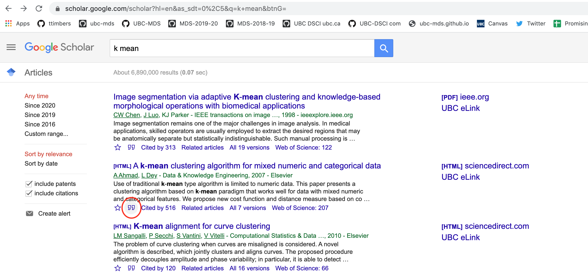

26 Reproducible reports
26.1 Other kinds of reproducible reports
In addition to Quarto, there are other tools and technologies commonly used for creating reproducible reports in data science. We think at the moment, Quarto is the best tool for this course, but we kept the notes on the others here for those who are interested.
26.2 Introduction to R Markdown
R Markdown is one implementation of a reproducible reporting tool. It is very user friendly and has become very powerful - allowing a great deal of control over formatting with the ability to render to many different outputs. Including: - PDF - html - Word - Powerpoint presentation - many more!
It is a mix of markdown primarily used for narrative text, and code chunks where code can be executed in an engine. It was originally created for the R programming language, but can be used with several others, including Python. See here in the R Markdown tutorial for how to use it with other languages, and here for a GitHub repository with a working example of this.
26.2.1 R Markdown resources
Exercise - get to know R Markdown
Let’s get to know R Markdown! Open RStudio and create a new R Markdown document, choosing HTML as the output format. Look at the source document that is created, where is the narrative text written? Where is the code written? How does this differ from Jupyter?
Exercise - render your first document
There are two ways to render a document from the Rmd source to the desired output. One is using a button in RStudio - the knit button that looks like this:

Try clicking that button and see what happens!
Another way you can do this is through code! Try running this in the R console (replacing "FILEPATH/FILE.Rmd" with the file path to where you saved this R Markdown document:
rmarkdown::render("FILEPATH/FILE.Rmd", output_format = "html_document")Exercise - checkout the new visual markdown editor
RStudio has implemented a new feature for working with R Markdown to make it more similar to working with Jupyter - it is called the visual markdown editor. Checkout this feature by clicking the visual markdown editor button when you have an R Markdown file open in the editor. The button looks like this:

26.2.2 A helpful hint for successfully working with R Markdown documents
Given that you need to render the entire document to see your Markdown and LaTeX rendered, it is important to “knit” often as you make changes. If you make an error in a LaTeX equation for example, it will stop the knitting/rendering process and you will not get to see the rendered document. So by knitting/rendering often you will know where the last changes you made are and then will be able to easily identify and fix your errors.
26.2.3 Running, editing and creating code chunks
Just like Jupyter notebooks, R Markdown has code cells, although they’re more commonly referred to as code “chunks” or “blocks”. These are based off fenced Markdown code blocks and always start and end with 3 backticks (```), just like in Markdown. Unique to R Markdown is that the leading three backticks are followed by curly braces containing the language engine you want to run, which for r looks like this {r}. Additional metadata can be included, for example a name to reference the code chunk:
```{r my first code chunk}
x <- 5
x
```There are other language engines that can be used in RMarkdown, you can learn more about that here.
All code cells are run when you knit/render the entire document (like pressing “Run all” in JupyterLab). By default, the code in the chunk and the code output will be included in your rendered document. You can also run the code by clicking the green play button on the right-hand side of the code chunk.
26.2.4 Naming code chunks and R Markdown document sections
When you include Markdown headers (using the # symbol) R Studio automatically creates a pop-up-like menu for you to use to navigate the document, which you can access by clicking the bar below this editor panel. It looks like:


By clicking on any of the headings in the pop-up-like menu, RStudio will navigate you to that section of the R Markdown document. Try clicking on one to see how it works.
In addition to Markdown headings, RStudio also keeps track of code chunks in that menu. By default RStudio names the chunks by their position (e.g. Chunk 1, Chunk 2, etc). But in reality those names are not that useful and it is more helpful to give code chunks meaningful names. For example, in the code chunk below where we use a for loop to sum the numbers from 1 to 10, we name the chunk “for-loop-sum”.
```{r for-loop-sum}
# initialize sum to 0
loop_sum <- 0
# loop of a sequence from 1 to 10 and calculate the sum
for (i in seq(1:10)){
loop_sum <- loop_sum + i
}
print(loop_sum)
```Do not duplicate code chunk names, this will break the rendering of your document!
26.2.5 Code chunk options
There are many code chunk options that you can set. These options let you customize chunk behavior, including whether a chunk is evaluated, whether to include the output in the rendered document, etc. A short list of code chunk options is shown below, but you can find an extensive list starting on the second page of this document.

You can set the chunk options at either a global level (once set they will be applied to all code chunks in the .Rmd file) or locally for a specific chunk (these will override the global chunk options if they are contradictory).
Global options are usually set in one chunk at the top of the document and looks like this (this is a screenshot):
{r setup, include=FALSE} knitr::opts_chunk$set(echo = FALSE)
Global chunk options are set by adding them as arguments to knitr::opts_chunk$set(...) (put them in place of ... and separate multiple options with a comma). The only global chunk options set in this document is echo = FALSE, which hides the code chunks and only shows the output, something that can be useful for non-technical reports.
Local chunk options are set by adding the options in the curly braces of a code chunk after the language engine and code chunk name. For example, to not display warnings in a single code chunk we would use the warning = FALSE code chunk as follows:
{r correlation no warning, warning = FALSE} # some R code that throws a warning cor( c( 1 , 1 ), c( 2 , 3 ) )
- R Markdown support inline evaluated code via the following syntax
Adding 3 to 4 gives `r 4 + 3`. The value of `x` is currently `r x`. - Latex equations can be written the same way as in Jupyter notebooks and standard markdown documents. -
$\alpha = 5$for inline latex and$$\alpha = 5$$for a math block. - When hovering over equations, R will display the rendered equation in a pop up. - R Markdown is built upon the Pandoc Markdown engine. This is useful to know since the Pandoc manual is a great exhaustive resource for looking up anything Markdown related.
- One of the features made available thanks to Pandoc is support for citations and bibliographies.
- Let’s cite the R-package by typing
citation()into the console, and copying the BibTeX citation into a new document that we callrstudio-demo.bib and adding an identifier string (a key) before the first comma, e.g.r-lang`. - Include the following field in the YAML metadata in the beginning of the document:
bibliography: rstudio-demo.bib, then cite it somewhere in the text by adding[@r-lang]. The bibliography will be appended to the document, so it is advisable to add a heading saying# Referencesat the very end.
- Let’s cite the R-package by typing
- When working with R Markdown (and code in general) be careful that you don’t copy stylized quotation marks because these will not work. For example, this will throw an error:
a = “This string”It should look like this instead:
a = "This string"26.2.6 Creating a table of contents
A table of contents can be automatically generated by specifying toc: true in the YAML front matter. It must be indented as so:
output:
github_document:
toc: trueThis works for all output file types I have explored so far!
26.2.7 Create tables and table descriptions
Data frames and other rectangular objects in R can be made into nice tables using knitr::kable. At the most basic level the syntax is:
knitr::kable(data_frame)To have a table description stay associated with the table, use the caption argument. For example:
knitr::kable(data_frame, caption = "Table 1. This is a summary of the data set")A couple notes: - If you render to github_document or html_document you do need to manually write the “Table 1.” in your figure caption. If you render to pdf_document you do not. - Want fancier tables? Use the kableExtra package! See docs here: https://cran.r-project.org/web/packages/kableExtra/vignettes/awesome_table_in_html.html
26.2.8 Resize figures and keep figure descriptions associated with their figures
There are two ways to do this, and you they depend on whether you are creating the figure from an R object vs a file.
1. Resizing figures and writing figure captions generated from an R plot object
Here you need to:
fig.width=<WIDTH>, fig.height=<HEIGHT>in the R code chunk options.fig.cap = "CAPTION"in the R code chunk options.
2. Resizing figures and writing figure captions generated from a saved file (e.g., .png)
Here you need to:
- use
knitr::include_graphics(<FILE_PATH>)inside a code chunk to point the figure file fig.capin the R code chunk options to write the figure caption- use
out.width = '40%'andout.height = '40%'in the R code chunk options to set the figure size.
26.2.9 Referencing values from code inline in the narrative text
You can refer to values stored in code inside your markdown text using the r object surrounded by backticks.
This is extremely useful for iterating over an analysis near the final stages when you already have the report written, or when doing parameterized reports (more on these in a bit).
However, the value you represent must be a vector.
26.2.10 Create a references section for citing external sources
DO NOT format references by hand, you will drive yourself nuts, especially the more references you collect! Instead use R Markdowns bibliography/citiation functionality. Below is a brief introduction, full docs here.
Steps to citing in R Markdown
Add
bibliography: PATH/FILENAME.bibto the YAML front matterAt the very end of the
.Rmdfile add# ReferencesCreate
PATH/FILENAME.bib(this is a plain text file) and place citations in there using BibTeX citation format (see examples here).In the
.Rmdmardown text, use@label(corresponds to the first string inside the{}in the.bibfile for the reference of interest) to do a in-text citation.
Getting BibTeX citations
BibTeX citations for code (R & Python programming languages and their respective packages) can be obtained from the sources: - citatation() function in R (no argument will give you the citation for R, adding a package name as a string to the function call will give you the citation for that package) - For Python, I have found I have had to do this somewhat manually from package GitHub repos or docs pages (some packages exist to do this, but none seem to work flawlessly out of box). See my demo .bib file here for an example: https://github.com/ttimbers/breast_cancer_predictor/blob/master/doc/breast_cancer_refs.bib
BibTeX citations for papers can usually be found via Google scholar:
1. Search for the paper on Google Scholar
- visit https://scholar.google.com/
2. Use Goolge Scholar to get the citation
- Click on the quotation icon under the paper:

- Click on the BibTeX link on the pop-up box:

- Copy the BibTeX citation to your .bib file
@article{ahmad2007k,
title={A k-mean clustering algorithm for mixed numeric and categorical data},
author={Ahmad, Amir and Dey, Lipika},
journal={Data \& Knowledge Engineering},
volume={63},
number={2},
pages={503--527},
year={2007},
publisher={Elsevier}
}Note: The Zotero reference manager now works nicely with R Markdown too! You might want to try this for your project, see here: https://www.rstudio.com/blog/rstudio-1-4-preview-citations/#citations-from-zotero
26.3 Advanced reporting
In a more complex project, we need to do the following things that are not available to us directly though RMarkdown or Jupyter notebooks on their own:
- Automatically generate figure numbering based on order of appearance in the report.
- Automatically generate table numbering based on order of appearance in the report.
- Cross reference figures and tables as so to keep the automatically generated figure/table numbers.
Jupyter notebooks on their also lack some functionality directly available in RMarkdown: 1. Removing code cells from final report 2. Build a bibliography (only not available in Jupyter directly) 3. Render code inline in Markdown
Thus to address both of these issues, we can layer additional packages on top of RMarkdown and Jupyter to gain this needed functionality. In the case of RMarkdown, we layer on the bookdown R package (rticle package can also be used too). And for Jupyter, we layer on the jupyter-book package.
26.4 R Markdown extensions
What if you need more formatting than is available to you in vanilla R Markdown? For example, cross referencing between sections for a report or thesis? Or journal article templates for research manuscripts? You can add additional functionality like this by adding the use of the bookdown or rticle R packages, respectively.
Below are links to the RMarkdown documentation for the advanced reporting tasks that we need to layer on bookdown for:
26.4.1 Figure formatting
26.4.2 Table formatting
26.5 Jupyter as a reproducible reporting tool
Jupyter notebooks along are reproducible reporting tools, and can be used as such, However, they have less power and functionality on their own compared to R Markdown on it’s own. To address this issue, a new tool, called Jupyter book, has been developed. It adds many of the features we have discussed above to Jupyter and makes it comparable to R Markdown.One important thing to note is that it is in early development stages still and changes to the package are being released frequently.
Jupyter book files
A minimal Jupyter book report needs several files inside a directory, here is a quick rundown of each:
_config.yml: configuration file for the Jupyter Book_toc.yml: table of contents file for the Jupyter Book<jbook>.ipynb: Jupyter Notebook with contents of the reportreferences.bib: BibTeX references file for the report
Here are the general Jupyter books docs: https://jupyterbook.org/intro.html
Below we link to particular sections useful for the tasks you need to accomplish for advanced reporting:
26.5.1 Removing code cells from final report
To do this we add tags to the cell meta data (e.g., remove-input). For details see these docs:
26.5.2 Building and formatting bibliographies
26.5.3 Render code inline in Markdown cells
26.5.4 Figure formatting
26.5.5 Table formatting
26.6 Rendering bookdown and jupyter-book documents at the command line
Just like scripts, we can execute bookdown and jupyter-bookdocuments at the command line. This is a useful feature for reproducibility and automation of our analysis.
26.6.1 Rendering bookdown documents at the command line
To render bookdown to HTML:
Rscript -e "rmarkdown::render('doc/rmd_example/rmd_example.Rmd', 'bookdown::html_document2')"To render bookdown to PDF using LaTeX:
Rscript -e "rmarkdown::render('doc/rmd_example/rmd_example.Rmd', 'bookdown::pdf_document2')"26.6.2 Rendering jupyter-book documents at the command line
Detailed docs for building a HTML book are here: https://jupyterbook.org/en/stable/basics/build.html
To render jupyter-book to HTML:
jb build <folder_containing_report_files>Detailed docs for building PDFs are here: https://jupyterbook.org/en/stable/advanced/pdf.html#build-a-pdf (including what dependencies are needed).
To render jupyter-book to PDF (converts HTML to PDF):
jupyter-book build <folder_containing_report_files> --builder pdfhtmlTo render jupyter-book to PDF using LaTeX:
jb build <folder_containing_report_files> --builder pdflatex